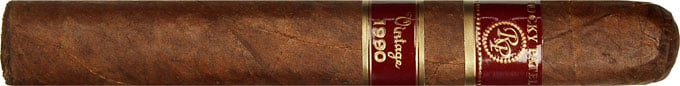
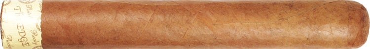
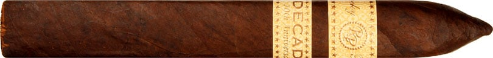
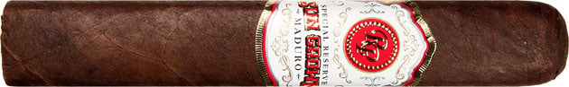
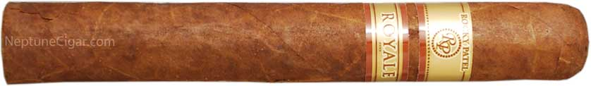
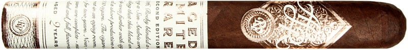
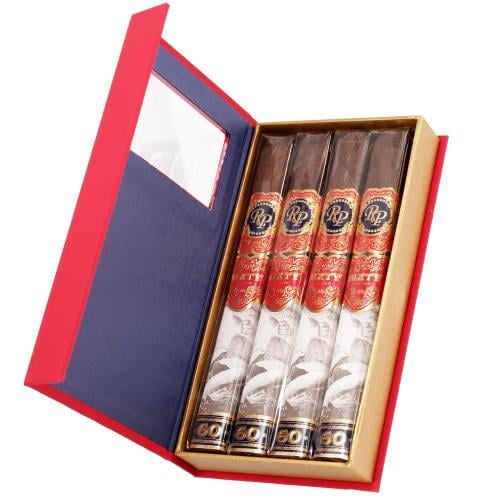
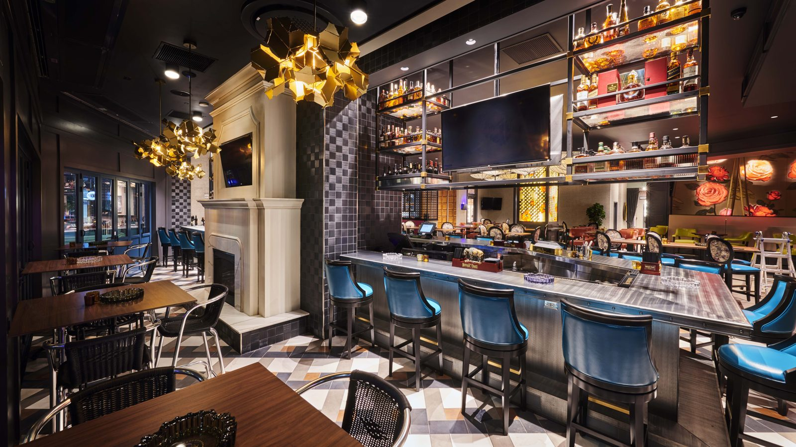

特集 — ロッキー・パテル
ロサンゼルスの弁護士が、葉巻の世界に飛び込んで30年。いまや年間3,000万本規模を出荷し、100を超えるラインを抱える「帝国」の主が、2026年、ふたたび法廷の原告席に立っています。本特集（第1部）の骨格は、その往路と復路です。弁護士の交渉力と、現場に入り込む行動力と、そして評価の割れる大量のライン。ロッキー・パテルという経営者の全体像を、会社と業界の記録を主軸に追います。

このシリーズとの接点も深い会社です。第5弾 AJフェルナンデス の最初の大口顧客はロッキー・パテルでした。第12弾 プラセンシア の最大の受託顧客もロッキー・パテル。葉の帝国の影に育ち、自前の畑と工場を持つ垂直統合の帝国へ。その全体像を追います。
なお本特集は2部構成です。会社の源流にいた共同創業者 フィル・ザンギ3世 は、2026年11月25日に回想録『One Long Day』を出版し、創業期を「もう一人の当事者」の側から語りました。その物語は 第2部「フィル・ザンギ3世 ― もう一人の創業者」 として独立させてあります。第1部では創業期について会社側・記録側の記述を主軸とし、回想録の証言は要点に留めます。同じ30年を、二人の創業者の視点から描く対の特集です。
本特集の事実関係は、専門誌・業界誌（Cigar Aficionado、Cigar Journal、Halfwheel、Cigar Coop、Cigar Snob、ABA Journal ほか）、小売大手のブランド史（Holt's）、会社公式サイトと公式発表、裁判記録の報道で裏取りした範囲に基づきます。これに加えて今回は、共同創業者フィル・ザンギ3世の回想録『One Long Day』（2026年11月25日、Kaplowitz Media との共同出版）を新しい一次資料として参照します。ただし回想録は ザンギ側の一方当事者の証言 です。第1部では証言の要点のみを「証言」と明示して触れ、証言の全文と検証は第2部に置きました。特に決裂の経緯については、第1部では記録側の分離の記述に留め、断定を避けています。規模の数字（出荷本数、1日の生産量など）は会社・業界側の公表に依るものが多く、その都度、誰の数字かを分かるように書きました。日本国内の状況は、当編集部が財務省の認可リストと国内販売店の掲載を照合した日本葉巻データベース（2026年11月27日時点）に基づきます。米国価格は当時の公表価格で、円換算は $1＝¥159 で計算しました。
◆ 一、弁護士の転身 ― ロサンゼルスから葉巻ブームへ
ラケシュ・"ロッキー"・パテル は1961年2月26日、インドに生まれ、米国のグリーンベイで育ちました。ロサンゼルスでエンターテインメント法と製造物責任を扱う弁護士としてキャリアを築き、葉巻とは「吸う側」として出会います。転機は1990年代半ば、葉巻ブームの熱気の中で訪れました。弁護士業の傍ら、彼はホンジュラスでの葉巻作りにのめり込み、やがて法廷を離れて畑と工場に身を置く道を選びます。
会社側の定型的な物語では、創業は1995年、ブランドは インディアン・タバック。葉巻ブームの渦中で生まれた新興ブランドの一つでした。ただし、この創業の姿は、回想録でもう一つの角度から描かれることになります（第2部「フィル・ザンギ3世」編で詳しく描きます）。パテル本人のキャリアについては、映画スターを顧客に持つ花形弁護士だったという触れ込みが繰り返し語られてきましたが、その代表格とされる人物本人は関与を否定しています。本特集では、その逸話は「伝説の半分」として扱い、検証欄に留めます。
パテルがアーノルド・シュワルツェネッガーの弁護士だったという話は、多くの媒体で繰り返されてきました。しかし Wikipedia のパテルの項は、シュワルツェネッガー本人への確認に基づき、この主張を否定されたものとして扱っています。本特集では、弁護士時代の華やかな逸話は本人の語る「半分は伝説」として、事実の核（ロサンゼルスでエンターテインメント／製造物責任の弁護士だったこと）と分けて書きました。
◆ 二、二つの創業物語 ― 会社側の記録と、もう一つの証言
会社側の物語では、創業は1995年、ブランドは インディアン・タバック、創業者はロッキー・パテルです。ホンジュラスでの栽培・製造は、パートナーの フィル・ザンギ3世 が担った――第12弾プラセンシア特集でも、その整理で紹介しました。葉巻ブームの渦中で生まれた新興ブランドの一つが、やがて CA（Cigar Aficionado）の高評価を量産するブランドへ育っていく。その表向きの履歴は、まずこの形で押さえてください。
一方、2026年11月に出版されたザンギの回想録は、起点を別の場所に置きます。少年期にインディアン・モーターサイクルの商標に関わった彼は、葉巻のアイデアと「インディアン・タバック」の名は自分が発明し、大手タバコ会社 UST のメンターのもとで最初の1,000箱を用意した。そしてパテルは、1996年に資金とともに加わったパートナーだった、と語ります。父の横領と会社の強制破産、商標をめぐる混乱という、創業の土台を揺るがした事情も、回想録は赤裸々に記しています。これらの証言の詳細は第2部に譲りますが、「創業物語は二つある」という事実そのものが、この会社の源流を理解する鍵です。

会社側の物語では、インディアン・タバックの創業は1995年、創業者はロッキー・パテルであり、ザンギはホンジュラス側の栽培・製造を担ったパートナーと位置づけられます。第12弾プラセンシア特集でも、その整理で「1995年にインディアン・タバックを創業、当初はザンギがホンジュラスでの栽培・製造を担った」と記しました。一方、回想録の物語では、商標と葉巻の発明はザンギが先行し、パテルは1996年に資金とともに加わった後発のパートナーです。両者は「1995〜96年に二人が組んで事業が本格化した」という骨格では重なりますが、主語が違います。本特集ではどちらか一方に寄せず、会社側の物語と回想録の証言を併記します。創業年についても、資料により1995年／1996年の揺れがあることを明記しておきます。
◆ 三、プラセンシアとの提携 ― 葉の供給と「工場の中の工場」
葉の供給関係の起点にも、回想録の証言があります。ダンリのグラナダ・ホンジュラス・ホテルで、ザンギは ネストル・プラセンシア（父） とほぼ毎晩のように夕食をともにし、自分が知らないうちにプラセンシアの葉を買っていたことが判明した。ネストルは若者の正直さを笑い、小売換算でおよそ3万ドル（約480万円）の買い物リストを「お前のものだ」と託した。ザンギは3か月以内に全額を返済したといいます。若いブランド主と葉の供給者のあいだに、まず個人的な信頼の貸し借りがあった――これが回想録の語る前史です（詳しくは第2部 第六章）。

記録の側では、その関係はやがて制度として固まります。1999年、パテルはプラセンシアのエル・パライソ工場の中に自社専用の生産区画を持つ「工場の中の工場」の提案を受け、白紙委任（カルト・ブランシュ）に近い裁量を得たと、Cigar Aficionado のインタビューで語られてきました（第12弾で詳述）。ホンジュラス生産の心臓部はここに置かれ、2008年1月にはラッパーの発酵をめぐって ディケイド の生産が2か月止まるという事件も起きています。品質への執着が、供給の危機と表裏一体だった時代です。
◆ 四、分離と改名 ― 記録の側から
二人の分離について、会社・業界側の資料に基づく第12弾の整理では、1999年、パテルはザンギと袂を分かち、製造を自ら引き継いだ、とされています。ただし回想録は、2000年の時点でも提携が続いていたと描き、ザンギがインディアン・タバックを離れるのは2002年までとします。分離の正確な年と経緯は、現時点では確定できません。決裂に至る経緯の証言――2000年の事故と、その病室で起きたこと――は、第2部 第八章で、ザンギ側の片側証言として慎重に紹介します。第1部では、記録の側の記述に留めます。
社名はインディアン・タバックからロッキー・パテルへ。改名の年には資料の揺れがありますが、Halfwheel は正式な社名変更を2006年3月としています。インディアン・タバックのブランド自体はその後も細々と続き、Halfwheel が2015年1月に廃止を確認しました（実質的な出荷停止は2014年）。弁護士の名を冠したブランドが表舞台に立ち、源流の名は静かに退場したことになります。
社名変更の年は、資料によって2002年、2003年、2006年と分かれます。Halfwheel は「正式な変更は2006年3月」としつつ、市場での名称の移行が段階的だったことを示唆します。本特集では「2000年代半ばにかけて段階的に改名された」と書き、単一年の断定を避けました。
◆ 五、タビクーサ ― 垂直統合の完成
2009年、パテルはニカラグアのエステリに自社工場 タビクーサ（タバカレラ・ビジャ・クーバ S.A.）を開きます。パートナーは名ブレンダー、アミルカル・ペレス＝カストロ。プラセンシアの「工場の中の工場」から始まった男が、今度は自分の工場の主になりました。Cigar Aficionado の2024年の工場ツアーでは、タビクーサの生産は年約700万本とされます。自社農園の収穫も始まり、2014年に自社農園で初めて収穫した葉だけを使った コンヴィクション（2024年）は、世界5,000箱の限定品として結実しました。1本100ドル（約15,900円）という価格も含め、「量の帝国」が「希少性」を演出し始めた転機の品です。
このシリーズとの接点で言えば、第5弾の AJフェルナンデス が最初に得た大口顧客がロッキー・パテルでした（フュージョンのライン）。葉の買い手として、工場の主として、パテルはニカラグアの葉巻産業の結節点に立ち続けています。規模の公表値では、2024年の PCA でニシュ・パテルが語ったところでは、ニカラグアで1日約2.6万〜2.8万本、ホンジュラスで1日約7.8万本、2022年の出荷は2,800万〜2,900万本、従業員2,000人、ラインは100超、販売は105か国。経営は弟の ニシュ・パテル、従兄弟の ニミッシュ・"ニミーD"・デサイ ら一族が担い、ロッキー本人の持分は95%と語られてきました（Cigar Aficionado のインタビュー）。
◆ 六、代表作と評価の割れ ― CAの高評価と、現場の辛口
ロッキー・パテルのラインは100を超えます。その中から、評価の履歴が追える代表作を並べます。見えてくるのは、Cigar Aficionado の高評価の量産と、独立系レビューの辛口が同居する「評価の割れ」の姿です。
| ライン | 起点・性格 | 生産地 | 評価の履歴 |
|---|---|---|---|
| ヴィンテージ 1990  | 年号シリーズの看板 | ホンジュラス | CA 92点、Top 25 に2004年と2006年の二度登場 |
| ジ・エッジ  | 裸足の意匠で知られる量販の柱 | ホンジュラス | エッジ・ハバノが CA 94点（2015年 Top 10入り） |
| ディケイド  | 10周年記念。発酵事件の主役 | ホンジュラス | トルペード CA 95点（2008年、「クラシック」の評）。一方 Halfwheel のランセロ評は80点と辛口 |
| サングロウン・マデューロ  | タビクーサ製の濃厚系 | ニカラグア | CA 95点、Top 25 of 2016 第2位 |
| ロワイヤル  | 2013年発売 | ニカラグア | CA Top 25 of 2014 第5位・94点（小売各社の転載による。CA公式での照合は今後の課題） |
| A.L.R. セカンド・エディション  | 巻き上げ後2年熟成 | ニカラグア | トロが CA 94点で Top 25 of 2019 第5位、さらに 96点で Top 25 of 2023 第4位に再登場 |
| シクスティ  | 60歳の記念作（2021年） | ニカラグア | CA 96点、Top 25 of 2022 第2位。一方 Holt's 自社評は88点、Cigar Coop も88点と、媒体で大きく割れる |
| コンヴィクション | 自社農園・初収穫（2014年）の葉のみ。世界5,000箱 | ニカラグア | CA 94点（2024年8月評）。Top 25 of 2024 第7位（集計サイトによる）。日本での認可定価は ¥17,500 とブランド最高値圏 |
割れ方は一様ではありません。ディケイドは「CA のクラシック」と独立系の80点が同居し、シクスティは CA の96点と小売・独立系の88点が並びます。2025年には新作 エメラルド のロブストが CA Top 25 of 2025 の第6位に入ったと小売各社のまとめが伝えています（CA公式での照合は今後の課題）。大量のラインを出し続ける戦略は、打率のばらつきと引き換えに、当たりの絶対数を稼ぐ戦略でもある。その是非は読者の舌に委ねますが、「葉巻界のマクドナルド」という比喩がどこから来たのかは、次回の調査課題として残しておきます。
◆ 七、BURN ― 葉巻を「体験」に変える
帝国のもう一つの顔が、直営ラウンジ BURN by Rocky Patel です。公式サイトに掲げられた店舗は、ネイプルズ、インディアナポリス、アトランタ、ピッツバーグ、オクラホマシティの5都市。葉巻とスピリッツとライブ音楽を束ねた「体験型」の店舗で、葉巻を「吸うもの」から「過ごす場所」へ拡張する試みです。2025〜26年に新規開店の目立った動きはなく、拡大路線は一息ついた格好ですが、ブランドの世界観を体現する舞台装置として、5店舗は今も営業を続けています。

◆ 八、ふたたび法廷へ ― 2026年の二つの訴訟
そして2026年、弁護士は原告として法廷に戻ってきました。一つ目は FDA（米食品医薬品局）の使用者手数料をめぐる訴訟です。2026年6月30日、連邦請求裁判所に提訴され（事件番号 1:26-cv-00946）、筆頭原告はロッキー・パテル。オリバ、パドロン、フエンテ、マイファザー、ラ・フロール・ドミニカーナ、CLE、J.C.ニューマン、アシュトンら業界の名門が名を連ね、請求は1,000万ドル（約16億円）超、業界全体では1億ドル（約160億円）規模に達する可能性が報じられています。
二つ目はカリフォルニア州の「無香料タバコリスト」をめぐる訴訟（Rocky Patel v. Bonta）。2026年8月27日、第9巡回区控訴裁判所は、仮処分の申し立てを退けた下級審の判断を支持しました。ただしこれは 仮処分の段階の判断であり、本案の最終判断ではありません。本特集では、その段階を正確に書いておきます。葉巻業界の権利擁護の最前列に、元弁護士の名前がある。この構図こそ、軸「法廷から帝国へ」の掉尾です。
◆ 日本編 ― 163品目が届いて、輸入元だけが分からない
日本でのロッキー・パテルの景色は、広くて深いものです。当編集部の日本葉巻データベース（2026年11月27日時点）では、ロッキー・パテル名義で 162品目、関連のハムレット名義で1品目、計 163品目 が登録されています。うち販売確認があるのは 40品目。販売店は 大越酒店 さん（36品目）と AUN Smoke さん（3品目、1品目は両店）です。価格帯は、ヴィンテージ 1999 ミニの ¥600 から、コンヴィクション トロの ¥17,500 まで。米国の「量の帝国」は、日本の棚にもそのままの幅で届いています。
| 品目 | 認可定価 | 販売価格 | 販売店 |
|---|---|---|---|
| エッジ・トロ コロホ | 不明 | ¥2,000 | 大越酒店さん |
| ヴィンテージ 1990 | ¥3,150 | ¥3,150 | 大越酒店さん |
| デケイド ロブスト | ¥2,400 | ¥2,400 | AUN Smokeさん |
| サングロウン・マデューロ ロブスト | ¥2,500 | ¥2,500 | 大越酒店さん |
| ロワイヤル ロブスト | ¥2,200 | ¥2,200 | 大越酒店さん |
| A.L.R. 2nd ロブスト | ¥3,450 | ¥3,450 | 大越酒店さん |
| シクスティ トロ | ¥4,600 | ¥4,600 | 大越酒店さん |
| コンヴィクション トロ | ¥17,500 | ¥17,500 | 大越酒店さん |
そして、第13弾ドリュー・エステートと同じ正直な留保を、ここでも記します。輸入元は、163品目すべてについて「不明」 です。163品目もの認可があり、40品目は実際に日本の店頭に並んでいるのに、誰が日本へ運んでいるのかがデータベース上で空白のまま。関連では、ハムレット・コンフィデンス 2024（¥6,000）が認可のみで登録されています。輸入元の特定は、当編集部の継続調査課題です。
163品目の内訳は、ブランド欄「ロッキー・パテル」162品目＋「ハムレット」1品目。認可確認は財務省認可リストによるものが151品目です。販売確認40品目の内訳は、大越酒店さん36、AUN Smokeさん3、両店1。輸入元は全品目で輸入元欄が「不明」のため、本編では推測を書かず、調査課題として明示しました。なお、データベースのメーカー欄は全行が「タバカレラ・ビジャ・クーバ S.A.（タビクーサ）」で統一されていますが、実際にはホンジュラス製ライン（ディケイド、ジ・エッジなど）の製造はプラセンシア系工場と海外小売の仕様欄にあり、ラインごとに生産工場は異なります。メーカー欄の統一表記は当編集部のデータ整理上の課題として、ここに注記します。
◆ 結び ― 法廷から畑へ、そして法廷へ
法廷から畑へ。そして、ふたたび法廷へ。ロッキー・パテルの30年は、その一行に収まります。葉の帝国に育てられ、自前の畑と工場を持つ垂直統合の帝国を作り、いま業界の権利擁護の最前列で原告席に座る。あなたのヒュミドールのロッキー・パテルを手に取るとき、その向こうに、プラセンシアの「工場の中の工場」と、エステリの自社工場と、法廷のドアがあることを思い出してください。
ただし、この物語にはもう一人の主役がいます。商標を持ち込み、ホンジュラスの現場を作り、決裂の傷を抱え、やがて名前の帰還を果たした共同創業者フィル・ザンギ3世。その半生は、第2部で描きます。
第2部「フィル・ザンギ3世 ― もう一人の創業者：名前と事業の帰還」（仮題）では、回想録『One Long Day』を主軸に、もう一つの創業物語を描きます。1996年の提携の内実、プラセンシアとの出会い、国境の夜、2000年の事故と決裂の証言、そしてブラントラップ誕生と「大佐」の謎。第1部と対になる一篇です。